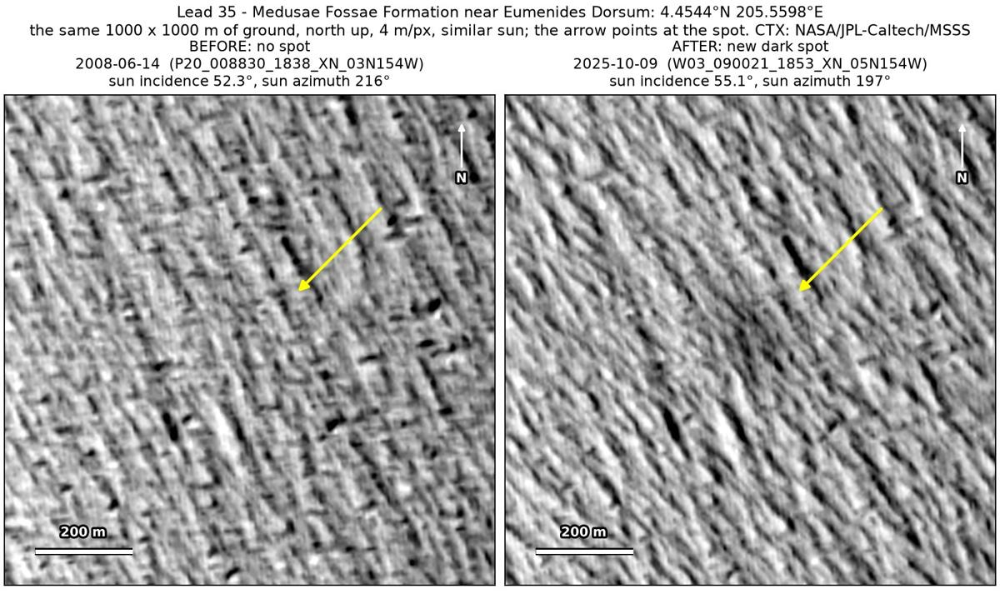
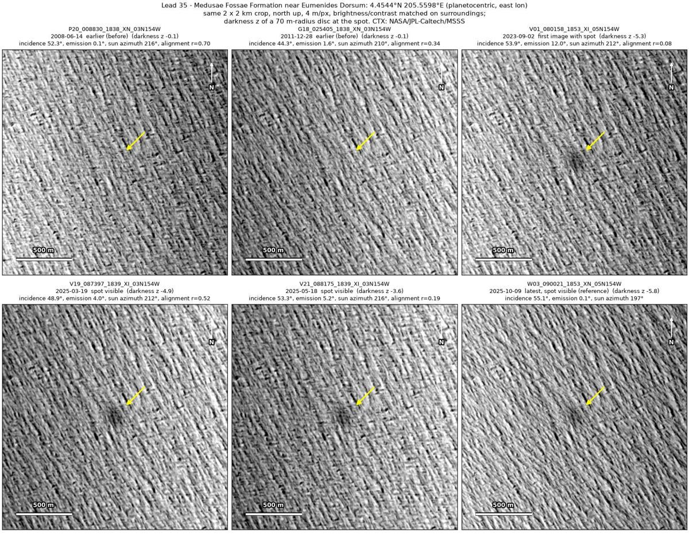
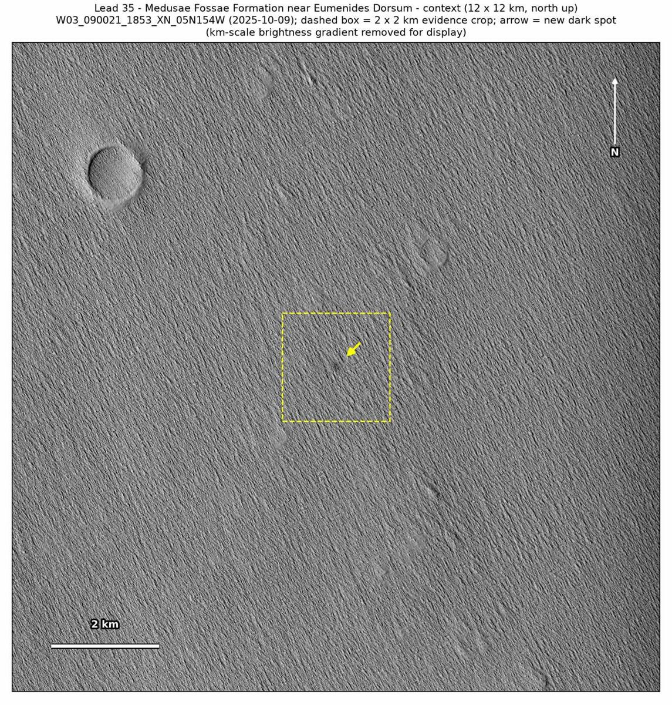

Professor of Mathematics
Paata Ivanisvili
Department of Mathematics, University of California, Irvine

← Possible new impact sites on Mars
Candidate 35: Medusae Fossae Formation near Eumenides Dorsum
Promising · roughly 55%

What changed. A diffuse dark patch 150 to 200 m across, with a faint darker centre, appeared on the wind-carved ground of the Medusae Fossae Formation near Eumenides Dorsum between December 2011 and September 2023. It is in four CTX images from four orbits, up to October 2025.
Why it may be a new impact. The June 2008 image, which lines up well and was taken with the sun at almost the same height as in the October 2025 image, shows nothing there, and neither does an image of December 2011. A dark patch that appeared and has lasted for two years, with no dust-devil track in any of the four images that show it, could be the blast zone of a small new crater.
- Location
- 4.454° N, 205.560° E (154.440° W)
- Absent
- 14 June 2008 and 28 December 2011
- Present
- 2 September 2023, 19 March 2025, 18 May 2025 and 9 October 2025
- Size
- Diffuse dark patch 150 to 200 m across, with a faint darker centre
- Confidence
- Promising candidate; roughly 55% that it is a new impact.
- Caveat
- A change in surface brightness driven by wind on this dusty ground explains it nearly as well, since the patch is diffuse and low in contrast, with no distinct core. No clearly dark feature lies near the spot to prove that the earlier images would have shown it: the darkest, 253 m to the south-east, is only faint in 2008. It lies outside every footprint of the high-resolution HiRISE camera; the nearest ends 28.1 km away. Like every candidate here, it is unconfirmed: see the caveat.

